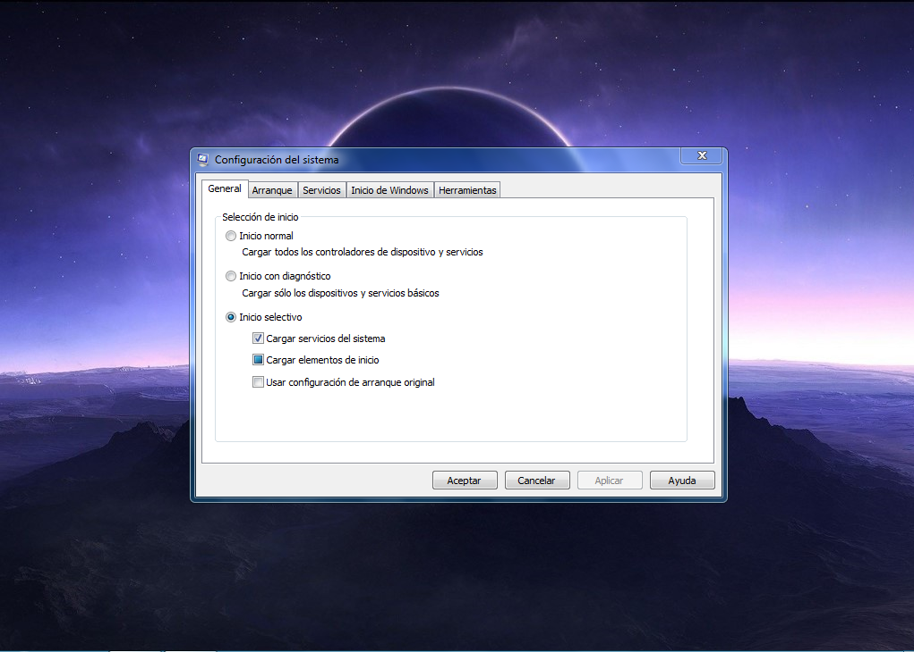
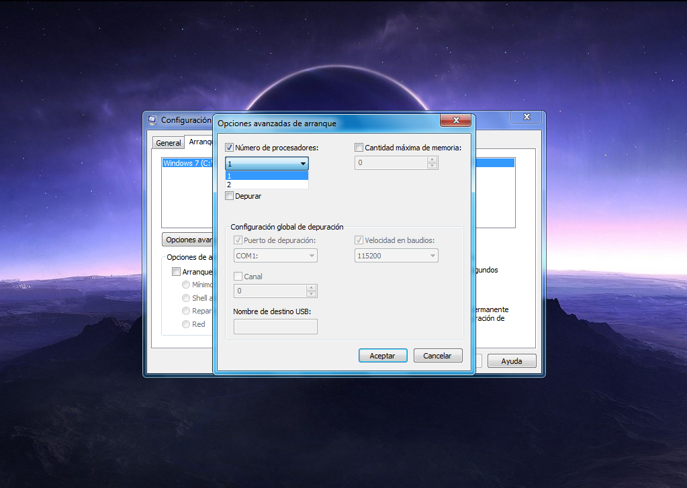

Método más eficaz con configuración del procesador y programas para que tu computadora sea una máquina potente
Hay varias manera de hecho una cantidad de multiplez opciones para mejorar la velocidad de tu computadora o hacerla de una maquina con buen rendimiento, y para eso me voy a estas opciones:
Nucleos del procesador
Programas de antivirus y limpiador.
Aquí hay que tener cuidado al configurar los núcleos de nuestro procesador, para entender esto y no empeorar nuestra pc te daremos una pequeña clase que ni te tomara ni 1 minuto de tu tiempo, un procesador puede tener 1,3, hasta 5 núcleos y cada uno es un ciclo de instrucciones así mismo son capaces de hacer ciclos de procesamiento de forma independiente, en cuatro partes: lectura, decodificación, ejecución y escritura pero la velocidad con la que se llevan a cabo estos ciclos de instrucciones no depende de los núcleos.
¿Mientras más núcleos tengamos mejor rendimiento tendríamos?
Todo dependerá de la arquitectura de tu CPU, pero podemos definir la velocidad y se define frecuencia de reloj, es lo que define la velocidad con que se llevan a cabo estos ciclos de instrucciones. Esta velocidad se mide en GHz; cuanto mayor sea, más rápido será capaz cada uno de estos núcleos en completar esas cuatro partes que componen un ciclo de instrucción completo.
¿Qué pasaría si tenemos una velocidad (GHz) menos de lo normal?
Ya que entendemos esto ahora podemos aumentar los núcleos de nuestro procesador pero hay otro detalle, vamos a dar un ejemplo y supongamos que nuestro procesador es un i3-9350K, su velocidad seria 4.60 GHz con 4 núcleos, te imaginas su tuviera menos de 4.60 GHz, obviamente intel no tiene eso en el mercado, ellos mismo esta de acuerdo que si le aumentamos los núcleos con una velocidad menos de 4.60 GHz lo que hará es que vaya peor de lo que estaba, podemos dar esta explicación con este modelo por que hay muchos. Ya entendiendo todo esto ahora si podemos ir a la configuración de nuestra computadora.
¿Como aumentar los nucleos de nuestro procesador?
El único lugar donde nos vamos a dirigir es a "msconfig" sin las comillas, usando "inicio + r", o escribiéndolo en el buscador, una vez allí nos vamos a arranque después opciones avanzada, aquí en número de proceso cuidadosamente vamos a elegir para que nos ayude, ahora ¿cómo sabemos que número de núcleos es lo adecuado para nuestra computadora?, simple, si tienes 2 núcleos elige el ultimo, si tienes 3 elige el ultimo pero si tienes 4 también puedes elegirlo pero tendrás que hacer una pequeña prueba de temperatura y lo puedes hacer con este programa llamado Core Temp a partir de 5 núcleos ya tendrás que hacer lo mismo con este programa y verificar si se recalienta, si es así, puedes usar pasta térmica, limpiar tu Fan cooler o para casos altos puedes comprar sistema de enfriamiento.
 ¿Esto es todo lo que hay que hacer para que tu computadora sea más rápida?
La respuesta sería no, el procesador va a hacer su trabajo pero no podrá si con el tiempo la maquina se llena de información o también es el caso que se puede consumir la RAM, es capacidad de programas que trabaja a la vez, también tienes que proteger sobre los virus, hoy en día es fácil de obtener virus así también como hay ataques hay seguridad, si de mi parte me pides un antivirus te recomiendo el 360. No es pago y es buenisimo, ya que no necesitas crackear nada que hace algunas personas, que si obtuviera un poco más de información el método crackear lo que hace es perjudicarte con el paso del tiempo, si quieres saber más sobre esto abajo te dejamos un artículo.
¿El antivirus que recomienda Tecno Expand es bueno?
Realmente no somos los creadores, pero si lo usamos a nuestro favor, ya que contiene un limpiador que te permite expulsar basura en tu equipo, lo puedes descargar gratuitamente aquí 360 Total Security y lo mejor no tienes que crackearlo que son unas de las cosas que puede ralentizar tu PC. Si aún tu computadora sigue lenta, puede descargar este programa Driver Booster te permitir actualizar los últimos controladores que tiene su equipo.
¿Y si mi computadora sigue lenta?
Otras recomendaciones que te podemos dar es una tarjeta gráfica o comprarte más memoria RAM para tu equipo, todo dependerá de lo que aguante tu tarjeta madre, y espero que te haya servido este articulo, si es así puedes seguirnos YouTube y Facebook, estaremos subiendo conocimiento, información, consejos y tips para tu computadora y teléfonos Android.
Quizas te puede interesar

¿ Por que no es recomendable usar crack ?
¿ crees que un crack puede pueda ser causa probable de virus o lentitud de tu pc ? Tecno Expand te responde las siguientes razones....
Entrar